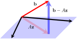
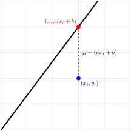

Often an exact solution to a problem in applied mathematics is difficult or impossible to obtain. However, it is usually just as useful to find an approximation to a solution. In particular, finding ``linear approximations" is a powerful technique in applied mathematics. One basic case is the situation where a system of linear equations has no solution, and it is desirable to find a ``best approximation" to a solution to the system.
We begin by defining the ``best approximation’’ in a natural way, and showing that computing the best approximation reduces to solving a related system of linear equations called the normal equations. Next, we demonstrate a common application where a collection of data points is approximated by a curve.
We conclude this section by showing that \(QR\)-factorization provides us with a more efficient way to solve the normal equations and compute the best approximation.
Consider the matrix equation \(A\mathbf{x}=\mathbf{b}\text{.}\) A quick examination of the last two rows should convince you that this equation has no solutions. In other words, \(\mathbf{b}\) is not in the span of the columns of \(A\text{.}\) If \(\mathbf{z}\) were an exact solution to \(A\mathbf{x}=\mathbf{b}\text{,}\) then \(\mathbf{b}-A\mathbf{z}\) would be \(\mathbf{0}\text{.}\)
Since the equation does not have a solution, we will attempt to find the next best thing to a solution by finding \(\mathbf{z}\) such that \(\norm{\mathbf{b}-A\mathbf{z}}\) is as small as possible. The quantity
is called the error. The following GeoGebra interactive will help you understand the geometry behind finding \(\mathbf{z}\text{.}\) RIGHT-CLICK and DRAG to rotate the image for a better view.
Figure9.6.1.
Record your best guess for \(\mathbf{z}\) -- you will have a chance to check your answer in Example 9.6.3.
Problem9.6.2.
What did you discover about the geometry of minimizing \(\norm{\mathbf{b}-A\mathbf{z}}\text{?}\) Select all that apply.
\(\mathbf{z}\) is orthogonal to the plane spanned by the columns of \(A\text{.}\)
\(\norm{\mathbf{b-A\mathbf{z}}}\) is orthogonal to \(\text{col}(A)\text{.}\)
\(\mathbf{b-A\mathbf{z}}\) is orthogonal to \(\text{col}(A)\text{.}\)
\(A\mathbf{z}\) is orthogonal to \(\text{col}(A)\text{.}\)
\(A\mathbf{z}\) is an orthogonal projection of \(\mathbf{b}\) onto \(\text{col}(A)\text{.}\)
Answer.
Option (c) and (d).
Our geometric observations will help us develop a method for finding \(\mathbf{z}\) .
Suppose \(A\) is an \(m\times n\) matrix, and \(\mathbf{b}\) is a column vector in \(\R^m\text{.}\) Consider the matrix equation \(A\mathbf{x}=\mathbf{b}\text{.}\) If this equation does not have a solution, we can attempt to find a best approximation by finding \(\mathbf{z}\) which minimizes the error, \(\norm{\mathbf{b}-A\mathbf{z}}\text{.}\) The expression \(\norm{\mathbf{b}-A\mathbf{z}}\) is also sometimes called the residual.
The error (or the residual) is given in terms of a vector norm. Recall that our definition of the norm involves the sum of squares of the vector components. When we minimize the norm, we minimize the sum of squares. This is why the method we are describing is often referred to as least squares. We will explore this idea further later in this section.
In the case when \(\text{col}(A)\) is a subspace of \(\R^3\text{,}\) we can see geometrically that \(\mathbf{z}\) is the best approximation if and only if \(A\mathbf{z}\) is an orthogonal projection of \(\mathbf{b}\) onto \(\text{col}(A)\text{,}\) and the error is the magnitude of \(\mathbf{b}-A\mathbf{z}\text{,}\) as shown below.

What we observed above, holds in general. We will use this fact to find \(\mathbf{z}\text{.}\) Every vector in \(\text{col}(A)\) can be written in the form \(A\mathbf{x}\) for some \(\mathbf{x}\) in \(\R^m\text{.}\) Our goal is to find \(\mathbf{z}\) such that \(A\mathbf{z}\) is the orthogonal projection of \(\mathbf{b}\) onto \(\text{col}(A)\text{.}\)
By Corollary 9.2.16, every vector \(A\mathbf{x}\) in \(\text{col}(A)\) is orthogonal to \(\mathbf{b}-A\mathbf{z}\text{.}\) This means \(\mathbf{b}-A\mathbf{z}\) is in the orthogonal complement of \(\text{col}(A)\text{,}\) which is \(\text{null}(A^T)\text{.}\)
Since \(\mathbf{b}-A\mathbf{z}\) is normal to the subspace \(\text{col}(A)\text{,}\) we call the system in (9.6.1) the normal equations for\(\mathbf{z}\text{.}\) If \(A^TA\) is invertible, then we can write
Compare this answer to your guess in Exploration 9.6.1. If your guess was correct, nice job! If your guess was different, try setting \(\mathbf{z}\) to the correct answer and use the GeoGebra interactive in Exploration 9.6.1 to examine the geometry of the problem.
We now come back to the question of when \(A^TA\) is invertible.
Theorem9.6.4.
If columns of matrix \(A\) are linearly independent, then \(A^TA\) is invertible.
Proof.
Let \(A\) be a matrix with linearly independent columns. We will show that \(\left(A^TA\right)\mathbf{x}=\mathbf{0}\) has only the trivial solution. For \(\mathbf{x}\text{,}\) a solution of \(A^TA\mathbf{x}=\mathbf{0}\text{,}\) we have
The average number \(g\) of goals per game scored by a hockey player seems to be related linearly to two factors: the number \(x_1\) of years of experience and the number \(x_2\) of goals in the preceding 10 games.
The data on the following page were collected on four players. Find the linear function \(g=a_0+a_1x_1+a_2x_2\) that best fits the data.
Hence the best-fitting function is \(g=0.14+0.09x_1+0.08x_2\text{.}\)
Subsection9.6.2Application of Least Squares to Curve Fitting
In practice, one can fit a function to a set of data points, so that the graph of the function passes through each of the points as well as possible. However, this is sometimes impossible and may not even be desirable (overfitting). In this section, we will learn how to approximate a collection of data points with a line (or a curve) that fits the ``trend" of the points. We will start with data that fit a linear pattern.
Exploration9.6.2.
Consider the points \((1,1)\text{,}\)\((2, 3)\) and \((4,4)\text{.}\) These points do not lie on a straight line, but they have a general upward linear trend. (Typically there would be many more points to consider, but we will limit our exploration to what we can do by hand.) Our goal is to find a line that fits these points as closely as possible.
We are looking for a function \(f\) of the form \(f(x)=ax+b\) such that the following infeasible system is satisfied as closely as possible
We found this fit by minimizing \(\norm{\mathbf{b}-A\mathbf{z}}\text{.}\) We will now investigate the meaning of this expression in relation to the line and the data points.
Observe that each entry of \(\mathbf{b}-A\mathbf{z}\) is the signed vertical distance between a particular point and the line. Instead of computing the error, \(\norm{\mathbf{b}-A\mathbf{z}}\text{,}\) we compute \(\norm{\mathbf{b}-A\mathbf{z}}^2\) to avoid the square root.
Minimizing \(\norm{\mathbf{b}-A\mathbf{z}}\) also minimizes \(\norm{\mathbf{b}-A\mathbf{z}}^2\text{.}\) Therefore, what we have minimized is the sum of squares of the vertical distances between the data points and the line. The following GeoGebra interactive will help you explore this idea.
Figure9.6.8.
In Exploration 9.6.2 we discovered that \(\norm{\mathbf{b}-A\mathbf{z}}^2\) is the sum of squares of vertical distances between the given data points and the proposed line.
By minimizing \(\norm{\mathbf{b}-A\mathbf{z}}\text{,}\) we minimize the sum of squares of vertical distances. This observation holds in general. Given a collection of points
A geometric interpretation of \(y_i-(ax_i+b)\) is shown below.

The line we obtain in this fashion is called a line of best fit or a trendline, and the method we used is referred to as the method of least squares. We can apply the method of least squares to find best fitting non-linear functions.
Example9.6.9.
Find the least squares approximating quadratic polynomial of the form \(f(x)=ax^2+bx+c\) for the following points.
It turns out that \(A^TA\) is invertible, so it is easy to solve for \(\mathbf{z}\text{.}\) You can use technology to accomplish this. Feel free to use any online tool or Mathlab for this for practice. You arrive at the solution
Therefore, the quadratic function of best fit is given by \(f(x)=0.26x^2+0.2x+1.15\text{.}\) You can see the graph and the points shown below. Before the end of this section we will return to this problem with a more computationally efficient approach.
Example9.6.10.
Given the data points \((-1, 0)\text{,}\)\((0,1)\text{,}\) and \((1,4)\text{,}\) find the least squares approximating function of the form \(f(x)=ax+b2^x\text{.}\)
Answer.
We are looking for an approximate solution to the system of equations
Since \(R\) is invertible, then \(R^T\) also has an inverse, and multiplying on the left by it yields
\begin{equation*}
R\mathbf{z} = Q^T b.
\end{equation*}
This last equation is easily solved by back-substitution, since \(R\) is upper triangular. This greatly reduces the amount of computations we need to make, as we will observe by using Octave in our final example of the section.
Exercises9.6.4Exercises
1.
Find the best approximation to a solution to the system of equations.
Find a linear function of best fit for each of the following sets of data points. Examine how well your line fits the points by typing the equation of the line into the Desmos window.
If \(A\) is an \(m \times n\) matrix, it can be proved that there exists a unique \(n \times m\) matrix \(A^{\#}\) satisfying the following four conditions: \(AA^{\#}A = A\text{;}\)\(A^{\#}AA^{\#} = A^{\#}\text{;}\)\(AA^{\#}\) and \(A^{\#}A\) are symmetric. The matrix \(A^{\#}\) is called the Moore-Penrose inverse.
If \(A\) is square and invertible, show that \(A^{\#} = A^{-1}\text{.}\)
If \(\text{rank} A = m\text{,}\) show that \(A^{\#} = A^{T}(AA^{T})^{-1}\text{.}\)
If \(\text{rank} A = n\text{,}\) show that \(A^{\#} = (A^{T}A)^{-1}A^{T}\text{.}\) (Notice the appearance of the Moore-Penrose inverse arrived when we solve the normal equations, arriving at Equation (9.6.2)).